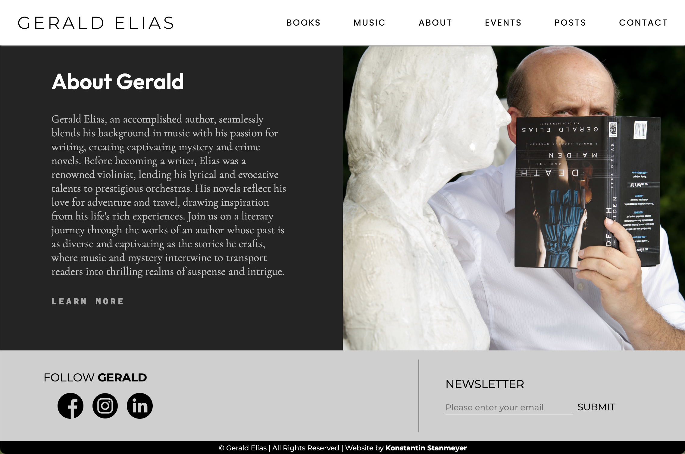
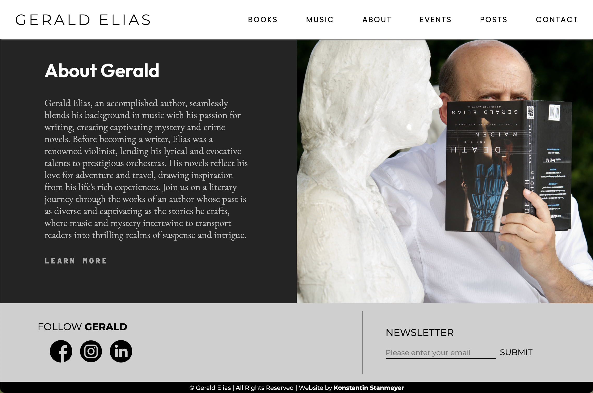
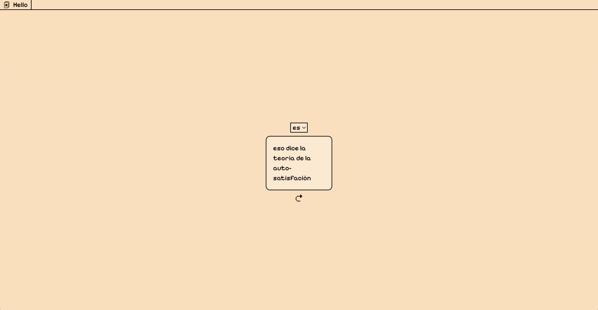

Konstantin builds full-stack solutions that just work.
I design applications and sites for businesses and personal interests as a freelance developer


landing
Konstantin builds full-stack solutions that just work.
I design applications and sites for businesses and personal interests as a freelance developer
People, performance, and problem-solving. In that order. I focus on writing clean, efficient code while leveraging modern frameworks and tools to build seamless digital experiences.


I excel at making ideas clear and ensuring smooth collaboration. Effective communication has been the key to some of the most rewarding partnerships.

 

01/03
GERALD ELIAS CLIENT
An extensive site created for mystery author and musician Gerald Elias. Utilized to market books and events, and giving a digestable experience to learn about the life and work of a tenured creator.
02/03
EXPOSURE PROJECT
A social-media-adjacent site intended to expose users to new ideas, and to act as an "anti-algorithm". In a world that's slowly feeding everyone the same information, this is intended to be a way to escape this echo-chamber.

03/03
SM-2 LEARNER PROJECT
A language-learning site inspired by Anki along with their SM-2 algorithm. Heavily modified to allow of a more aesthetic, cohesive experience that covers ideas in languages that Anki does not account for.